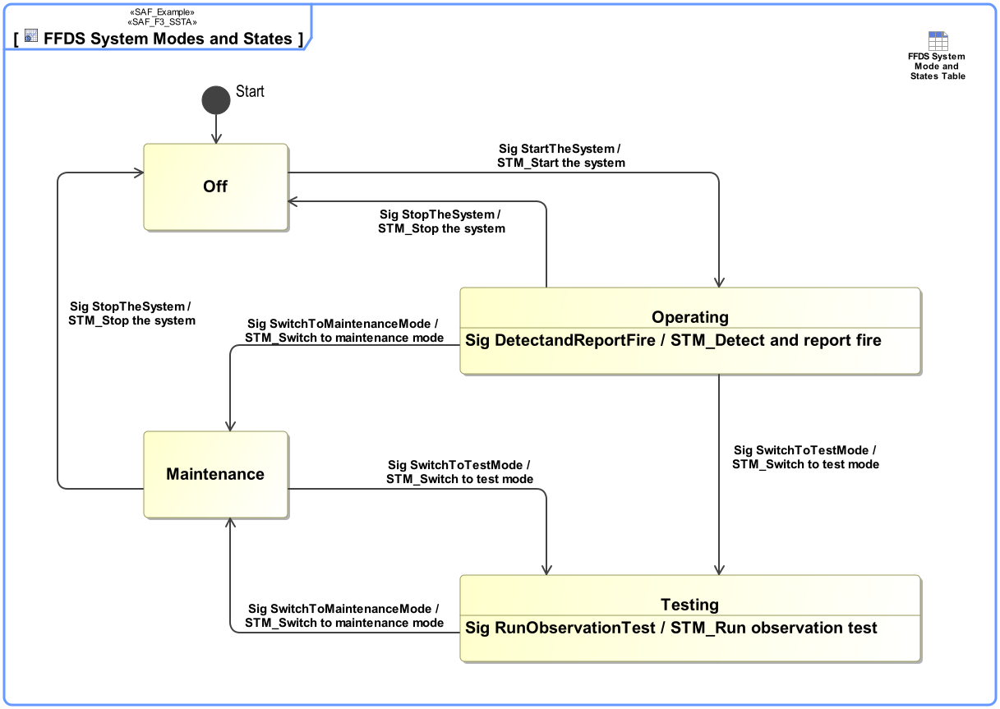
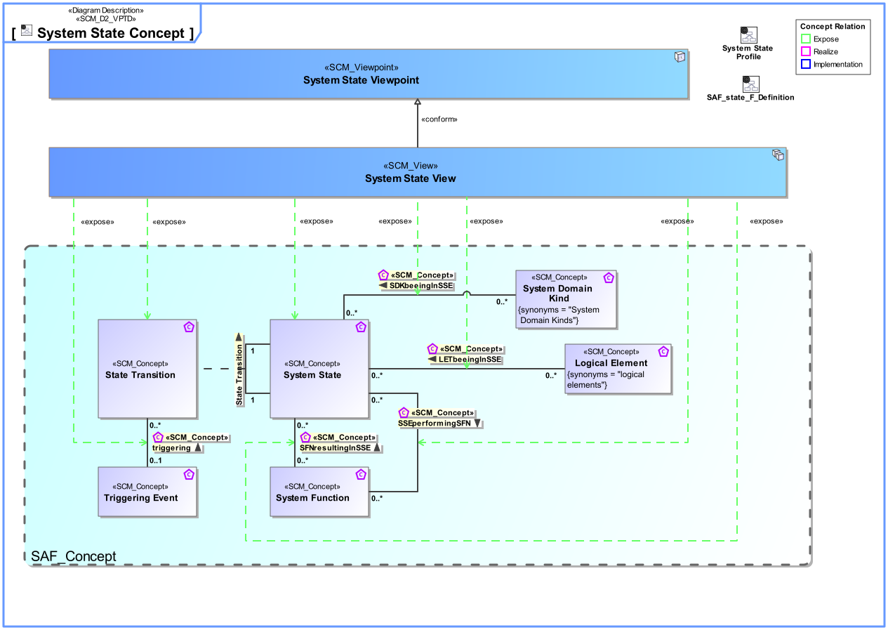
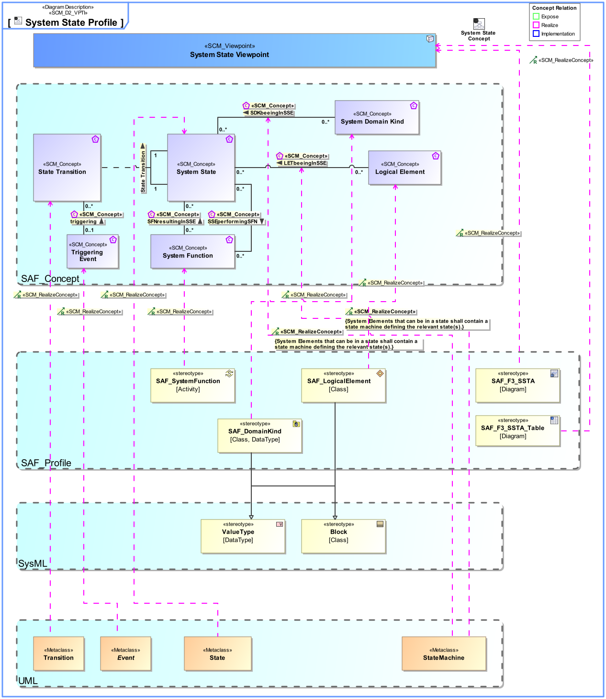

F3_SSTA System State Viewpoint
| Domain | Aspect | Maturity |
|---|---|---|
| Functional | Process & Behavior |

The System State Viewpoint defines the conditions of the SOI or parts of thereof that constrain the execution of System Functions. System States are used as pre- or post-condition of System Use Cases, and as constraints within the definition of System Functions to specifying valid transitions. Valid transitions between System States and the conditions for transitioning are specified in system wide concepts captured in System Requirements.
The System State Viewpoint supports the “System Requirements Definition Process” activities of the INCOSE SYSTEMS ENGINEERING HANDBOOK 2015 [§4.3] and contributes to the System Function Definition.
A block definition diagram (BDD) featuring states, and state transitions. Note: References to model elements that are dependent of states, or transitions shall be shown as callout, or compartment notation.
A tabular format listing states, state transitions, and the conditons to be fullfilled before the transition will occur. References to model elements that are dependent of states (Domain Item Kinds, System Functions, System Use Cases, etc.), or transitions shall be shown in the table.
The following Stereotypes / Model Elements are used in the Viewpoint:
The Diagram shows the concepts exposed by the viewpoint, and related concepts if necessary.

| Concept | Documentation |
|---|---|
| SDKbeeingInSSE | Specifies that a System Domain Kind can have certain states. Note: Of course an item is in only one distinct state at a certain time. The multiplicity means that an Item can have a set of possible states, and a state can be used to specify possible States for several domain items. |
| SSEperformingSFN | Specifies the fact that the Function is only provided in distinct States. The state is a precondition for the Function to be able to perform. |
| State Transition | Describes an allowed transition between two states of an item that can be in distinct States. |
| System State | Describes a state (or mode) of something that can have distinct states. |
| triggering | |
| SFNresultingInSSE | Specifies the fact that a System Function can perform a particular set of transitions, resulting in the related target System States. |
| LETbeeingInSSE | Specifies the System States a Logical Element can be in. |
The Diagram shows the implementation of exposed concepts.

| Concept | Realization |
|---|---|
| SDKbeeingInSSE | |
| SSEperformingSFN | |
| State Transition | |
| System State | |
| triggering | |
| SFNresultingInSSE | |
| LETbeeingInSSE |